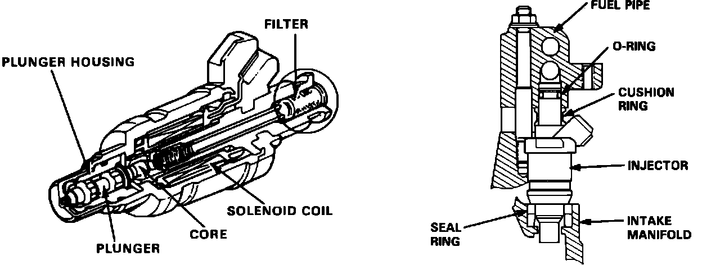

Fuel Injector: Description and Operation
Fuel Injector:

The fuel injector sprays a precise amount of highly atomized fuel into the engine intake system to ensure efficient combustion of the air/fuel mixture. The injectors are located at the end of the intake manifold runners above the intake valves.
The injector is a solenoid actuated, constant stroke, pintle type. Components include a solenoid, plunger needle valve, and housing. When current is applied to the solenoid coil, the valve lifts up and pressurized fuel is injected close to the intake valve.
Because the needle valve lift and fuel pressure are constant, fuel quantity is determined by the duration current is applied to the solenoid coil.
The injector is held in place by the fuel rail and is sealed with an O-ring and seal, top and bottom.